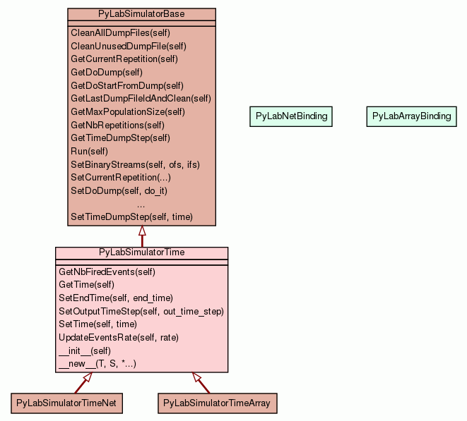

Class PyLabSimulatorTime

A basic TIME based subclass of PyLabSimulatorBase.
By default the time evolves continuously as follows :
t += -log(p) / ter
where "p" is a random float number [0.0, 1.0] and "ter" is the current total event rate.
The way the time is computed / evolves can be customized by overriding
the hook TimeStep() (See C++
LabSimulatorTime::TimeStep() for more details).
This class comes with additional dedicated hooks to be overridden.
(See C++ ResetTime(), TimeStep(),
FireEvent(), ... for an exhaustive list).
Note :
We will often use the term "event(s) rate(s)" in time based contexts,
since this class provides a canvas for firing events according to time during
the simulation. By default in PyLabSimulatorTime, the events are fired relatively
to their rate (or propensity to occur).
Of course, the default event based behavior of this class can be
customized by overriding the appropriate hooks.
SPECIFICITIES :
The default inner code of RunSimulation() is an override of
the PyLabSimulatorBase RunSimulation()
hook.
This hook can be overridden, but by default it consists in a
re-implementation of LabSimulatorBase.RunSimulation() for
the need of a TIME based process.
The only differences with base version are :
-
We add a reset of the time properties (ResetTime()) each time we
call a new run (right after the InitSimulation() call)
-
This method is no more responsible for managing the output, since
StepSimulation() is
>>>
>>> def RunSimulation(self):
...
... done = False
... self.InitSimulation()
... self.ResetTime();
... self.InitUnBinarize()
... self.BeforeRun()
... while (not done):
...
...
... self.BeforeStep()
... self.StepSimulation()
... self.AfterStep()
... self.StepBinarize()
...
... if (self.EndSimulation()) done = True
...
... self.OutputSimulation()
... self.AfterRun()
...
Note : Also be aware that the total events rate is
theoretically in constant evolution and by the way, has to be updated
in the stepping process.
StepSimulation() method, is specialized too, and is very
important : this is where the decisions for firing new events are
taken. Consequently, you can keep it "AS IS" but you will
have to override the FireEvent() hook, because this is where
everything happen.
See the C++ documentation regarding the default implementation of
LabSimluatorTime::StepSimulation(), which behavior can be
customized through LabSimluatorTime::TimeStep(), SetEndTime() and SetOutputTimeStep().
Here is how StepSimulation() looks like :
>>>
>>> def StepSimulation(self):
...
... if(self.t_nextout <= self.t_nextevent && self.t_nextout <= self.t_end):
...
... self.t = self.t_nextout
...
... self.OutputSimulation()
...
...
... self.t_nextout = self.t + self.t_outstep
...
...
...
... if(self.t_nextevent <= self.t_nextout && self.t_nextout <= self.t_end)
...
... self.t = self.t_nextevent
...
... self.FireEvent()
...
... self.nb_fired_events += 1
...
... self.t_nextevent = self.t + self.TimeStep()
...
...
...
... if(self.t_nextout > self.t_end): self.t = self.t_end
COMMON USAGE :
-
Create a subclass of PyLabSimulatorTime
-
Feel free to override the hooks (virtual) functions fitting your
needs
int
|
GetNbFiredEvents(self)
Get the number of events having been fired since the simulation has
begun. |
|
|
float
|
GetTime(self)
Get the current time of this simulation. |
|
|
|
|
SetEndTime(self,
end_time)
Set the maximum time for the simulation (better use a value related
to the way chosen to compute time - See TimeStep()). |
|
|
|
|
SetOutputTimeStep(self,
out_time_step)
Set step of time for writing the output (better use a value related
to the way chosen to compute time - See TimeStep()). |
|
|
|
|
SetTime(self,
time)
Force the current time (useful when starting the simulation from a
given time instead of from the beginning - when recovering from an
interruption, by example). |
|
|
|
|
UpdateEventsRate(self,
rate)
Update the total events rate (value used to compute the "time to
next event" - See TimeStep()). |
|
|
|
|
|
|
a new object with type S, a subtype of T
|
|
|
Inherited from PyLabSimulatorBase:
CleanAllDumpFiles,
CleanUnusedDumpFile,
GetCurrentRepetition,
GetDoDump,
GetDoStartFromDump,
GetLastDumpFileIdAndClean,
GetMaxPopulationSize,
GetNbRepetitions,
GetTimeDumpStep,
Run,
SetBinaryStreams,
SetCurrentRepetition,
SetDoDump,
SetDoStartFromDump,
SetMaxPopulationSize,
SetNbRepetitions,
SetTimeDumpStep
Inherited from object:
__delattr__,
__format__,
__getattribute__,
__hash__,
__reduce__,
__reduce_ex__,
__repr__,
__setattr__,
__sizeof__,
__str__,
__subclasshook__
|
|
Inherited from object:
__class__
|
|
Get the number of events having been fired since the simulation has
begun.
- Returns:
int
- A number of events.
|
|
Get the current time of this simulation.
- Returns:
float
- The current time expressed relatively to the TimeStep() method's
inner algorithm.
|
SetEndTime(self,
end_time)
|
|
Set the maximum time for the simulation (better use a value related to
the way chosen to compute time - See TimeStep()).
- Parameters:
end_time (float) - The final time expressed relatively to the TimeStep() method's
inner algorithm.
|
SetOutputTimeStep(self,
out_time_step)
|
|
Set step of time for writing the output (better use a value related to
the way chosen to compute time - See TimeStep()).
- Parameters:
out_time_step (float) - The time step expressed relatively to the TimeStep() method's
inner algorithm.
|
|
Force the current time (useful when starting the simulation from a
given time instead of from the beginning - when recovering from an
interruption, by example).
- Parameters:
time (float) - The time at which to start expressed relatively to the TimeStep()
method's inner algorithm.
|
UpdateEventsRate(self,
rate)
|
|
Update the total events rate (value used to compute the "time to
next event" - See TimeStep()).
- Parameters:
rate (float) - The new total events rate.
|
__init__(self)
(Constructor)
|
|
Default constructor.
- Overrides:
object.__init__
|
- Returns: a new object with type S, a subtype of T
- Overrides:
object.__new__
|